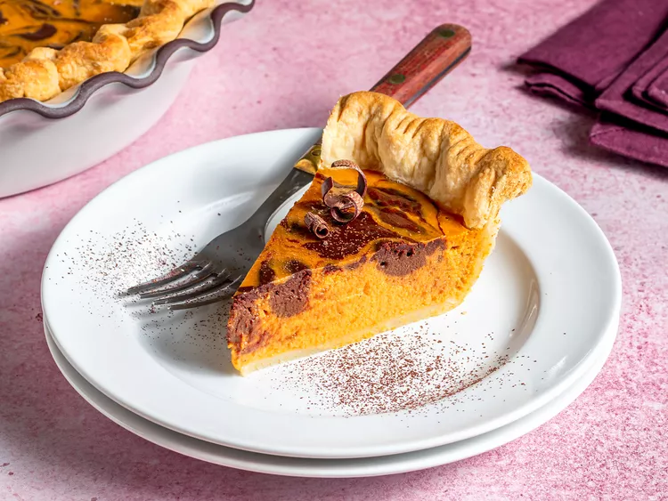

Pumpkin pie

Description
A beautifully marbled pumpkin pie that feels extra luxurious.
Ingredients
- 2 Ounces semisweet chocolate, finely chopped.
- 1 (9 inch) Unbaked pie crust.
- 1 (16 ounce) Can pumpkin puree
- 1 (14 ounce) Can sweetened condensed milk.
- 3 Large eggs
- 1 ½ Teaspoons pumpkin pie spice.
Steps
- Preheat the oven to 425 degrees F (220 degrees C). Fit pie crust into a 9-inch pie dish and place it on a baking sheet.
- Melt the chocolate in the microwave or on the top of a double boiler. To melt the finely-chopped chocolate in the microwave, melt it in a microwave-proof bowl in 30-second intervals, stirring between intervals. Take care not to overheat, which will cause the chocolate to burn and become grainy. Set the melted chocolate aside while preparing the remainder of the pie filling.
- Combine pumpkin puree, condensed milk, eggs, and pumpkin pie spice in a large bowl; mix until combined.
- Measure ½ cup of the pumpkin pie filling and stir it into the bowl of melted chocolate until smooth.
- Pour the remaining pie filling into the pie shell. Dollop the chocolate pie filling on top. Use a toothpick or butter knife to create a marbled effect by swirling in and out of each of the dollops.
- Bake in the preheated oven for 15 minutes. Reduce heat to 350 degrees F (175 degrees C) and continue to bake until filling is set, 35 to 40 minutes.Remove from the oven, set on a wire rack, and cool completely before serving.